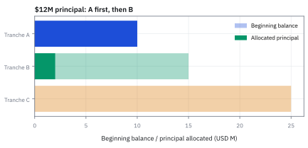
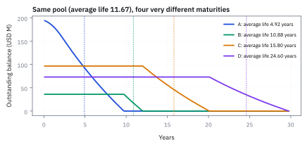
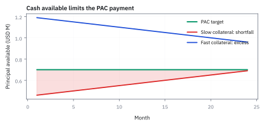
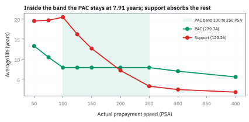

22.3 CMO Tranche Waterfalls
กระจาย timing risk ด้วยกติกา principal ไม่ใช่ด้วยเวทมนตร์
โครงสร้าง Collateralized Mortgage Obligation (CMO) ขนาด \$400 ล้าน แบ่ง 4 ชั้น งวดแรกสินเชื่อคืนต้นมา \$0.535 ล้าน หากคิวแรก A มีหนี้ \$194.5 ล้าน ชั้น A, B, C, D จะได้เงินต้นกี่ดอลลาร์?
เฉลย: tranche A รับเงินต้นไปคนเดียวทั้งหมด \$0.535 ล้าน (เหลือหนี้ \$193.965 ล้าน) ขณะที่ B, C และ D ถูกล็อกเอาต์ ได้รับเงินต้น \$0 แต่ทุก tranche ยังคงได้รับดอกเบี้ยตามยอดหนี้เดิมตามปกติ
ศัพท์ของกฎการจ่ายเงิน
- collateralized mortgage obligation (CMO)
- โครงสร้างที่ออกหลาย tranches โดยมี mortgage-backed security (MBS) เป็น collateral ใช้จัดสรร principal และ interest ตามกติกา
- tranche
- ชั้นของ claim ใน deal ที่มี balance, coupon และ priority ของตน ใช้ให้ investor เลือก timing profile
- waterfall
- ชุดกฎลำดับการจ่าย cash flow ใช้ป้องกัน ambiguity ว่าเงินเดือนหนึ่งไปที่ใคร
- sequential-pay tranche
- tranche ที่รับ principal ตามลำดับ A แล้ว B แล้ว C ใช้สร้าง average life ที่ต่างกัน
- planned amortization class (PAC)
- tranche ที่ตั้งเป้า principal schedule ภายใน Public Securities Association (PSA) band ใช้ให้ cash flow เสถียรกว่าโดยใช้ support tranche ดูด deviation
- option-adjusted spread (OAS)
- spread ที่ทำให้ present value ของ cash flow หลาย rate paths เท่ากับราคา ใช้เปรียบเทียบ CMO ที่มี embedded prepayment option
- collateralized debt obligation (CDO)
- โครงสร้างที่แบ่ง credit loss ของ portfolio เป็น tranches ใช้เปรียบเทียบ waterfall ของ credit กับ waterfall ของ CMO
- credit default swap (CDS)
- สัญญาที่ protection buyer จ่าย premium แลก payment เมื่อ reference entity default ใช้สร้างหรือ hedge credit exposure โดยไม่ซื้อ bond
- support tranche
- tranche ที่รับ prepayment speed deviation ก่อน PAC ใช้เป็น shock absorber แต่จึงรับ extension/contraction มาก
- average life
- เวลาถัวเฉลี่ยของ principal return ใช้วัด timing ของ principal ไม่ใช่ maturity ตามเอกสาร
- accrual tranche
- tranche ที่ไม่รับดอกเบี้ยเป็นเงินสดแต่ทบเข้าเงินต้น ใช้เร่งการคืนเงินต้นให้ tranche ก่อนหน้าเร็วขึ้น
- floater
- tranche ที่จ่ายดอกเบี้ยลอยตัวอิงดัชนีตลาด เช่น LIBOR บวก spread ใช้ป้องกันความเสี่ยงดอกเบี้ยขาขึ้น
- inverse floater
- tranche ที่จ่ายคูปองสวนทางกับดอกเบี้ยตลาด โดยคูปองเพิ่มขึ้นเมื่อดอกเบี้ยลดลง ใช้สร้างผลตอบแทนแบบมี leverage
- London Interbank Offered Rate (LIBOR)
- อัตราดอกเบี้ยอ้างอิงระหว่างธนาคารในตลาดลอนดอน ใช้เป็นฐานคำนวณคูปองของ floating-rate notes และ derivatives
สัญกรณ์และหน่วย
| สัญลักษณ์ | ความหมาย | หน่วย |
|---|---|---|
| $Q_t$ | principal collection จาก collateral ในเดือน $t$ | USD ต่อเดือน |
| $B^k_t$ | balance ของ tranche $k$ หลัง payment เดือน $t$ | USD |
| $A^k_t$ | principal allocated ให้ tranche $k$ | USD ต่อเดือน |
| $c_k$ | coupon ของ tranche $k$ | ต่อปี |
| $AL_k$ | average life ของ tranche $k$ | ปี |
| $L,U$ | lower และ upper PSA bounds ของ PAC | PSA |
| $B_{\mathrm{fl}}, B_{\mathrm{inv}}$ | ยอดเงินต้นของ floating-rate tranche และ inverse-floating-rate tranche | USD |
| $c_{\mathrm{fl}}, c_{\mathrm{inv}}$ | อัตราคูปองของ floater และ inverse floater | ต่อปี |
| $K, g$ | อัตราคูปองเพดาน (cap) และตัวคูณ leverage (gearing ratio) ของ inverse floater | ต่อปี, เท่า |
| $Q_t^{x}$ | เงินต้นของ pool ในเดือน $t$ เมื่อคืนก่อนกำหนดที่ $x$ PSA | ล้าน USD ต่อเดือน |
| $S_t$ | schedule ของ PAC ในเดือน $t$ | ล้าน USD ต่อเดือน |
| $AL_{PAC}(x),\ AL_{SUP}(x)$ | average life ของ PAC และ support เมื่อความเร็วจริงเป็น $x$ PSA | ปี |
ที่มาที่ไป: การแบ่งกระแสเงินเป็นชั้น เพื่อสร้างของที่ลูกค้าต้องการ
ปัญหาของตราสารส่งผ่านแบบเดิมคือผู้ลงทุนทุกคนได้รับความเสี่ยงชุดเดียวกันหมด ทั้งที่ผู้ลงทุนแต่ละกลุ่มต้องการไม่เหมือนกัน
บริษัทประกันอยากได้กระแสเงินยาวและแน่นอน ส่วนกองทุนตลาดเงินอยากได้สั้นและปลอดภัยที่สุด
โครงสร้างที่พัฒนาขึ้นในทศวรรษ 1980 แก้ปัญหานี้ด้วยการแบ่งกระแสเงินจากกลุ่มสินเชื่อชุดเดียวกัน ออกเป็นชั้น ๆ โดยแยกลำดับคืน principal ออกจากกติกาแบ่ง credit loss สองลำดับนี้ไม่ใช่สิ่งเดียวกัน
ผลคือสร้างตราสารที่ปลอดภัยกว่าและเสี่ยงกว่าจากวัตถุดิบชุดเดียวกัน ซึ่งเป็นวิศวกรรมการเงินที่ชาญฉลาด แต่ก็เป็นโครงสร้างที่พังลงในปี 2008 ด้วยเหตุผลที่หัวข้อ 22.5 จะอธิบาย
กำเนิด CMO ปี 1983: วิศวกรรมแก้ปัญหา duration mismatch ของ Wall Street
ในช่วงต้นทศวรรษ 1980 ตลาดสินเชื่อบ้านสหรัฐฯ กำลังเผชิญทางตัน ธนาคารและกองทุนบำเหน็จบำนาญปฏิเสธการซื้อตราสาร pass-through แบบเดิม เพราะไม่มีใครรู้ว่าตนเองจะได้รับเงินต้นคืนเมื่อไร หากดอกเบี้ยลดลง ลูกหนี้แห่ refinance เงินต้นจะไหลกลับมาเร็วเกินไป (contraction risk) แต่หากดอกเบี้ยสูงขึ้น ลูกหนี้จะหยุดคืนหนี้ เงินต้นจะจมยาว 30 ปี (extension risk)
ในเดือนมิถุนายน 1983 Larry Fink แห่งวาณิชธนกิจ First Boston ร่วมกับทีมงานของ Freddie Mac คิดค้นโครงสร้างใหม่มูลค่า 1 พันล้านดอลลาร์ โดยนำกระแสเงินจาก mortgage pool กองเดียว มาจัดลำดับการจ่ายเงินต้นใหม่เป็นคิว เรียกว่า Collateralized Mortgage Obligation (CMO)
โครงสร้าง CMO ที่พัฒนาขึ้นแบ่งออกเป็น 4 ประเภทหลัก: Sequential-pay CMO (จ่ายเงินต้นเรียงชั้น A ถึง D), Accrual bond หรือ Z-bond (พักดอกเบี้ยทบต้นเพื่อนำเงินสดไปเร่งจ่ายชั้นหน้า), Floater และ Inverse floater (แบ่งคูปองตามทิศทางดอกเบี้ยตลาด) และ Planned Amortization Class (PAC: กำหนดตารางคืนเงินต้นแน่นอนโดยมี support tranche เป็นกันชน)
CMO แก้ปัญหาอะไร และไม่ได้แก้อะไร
Pass-through ให้ investor ทุกคนรับ principal proportional กัน จึงทุกคนโดน prepayment speed เดียวกัน. Sequential CMO ย้าย principal ไป tranche A ก่อน, เมื่อ A หมดจึง B, แล้ว C. นักลงทุน A รับ contraction มากกว่าแต่ extension น้อยกว่า C; นักลงทุน C เป็นคนรอท้ายแถว.
CMO ไม่ลบ risk จาก collateral และไม่ทำให้ borrower จ่ายเงินเพิ่ม—มัน redistribute timing, credit enhancement และบางครั้ง liquidity risk ตาม contract
อ่าน waterfall เหมือนอ่าน source code ที่แตะเงิน: ต้องมี priority, cap ที่ balance, treatment ของ interest shortfall, trigger และ cleanup call ชัดเจน.
“senior” ใน CMO principal order ไม่ได้แปลว่า immune ต่อ credit loss หาก deal มี credit losses หรือ structure ต่างชนิด.
ขั้นที่ 1 — นิยามของลำดับการจ่ายเงินต้นแบบเรียงชั้น
สี่ก้อนนี้เป็น นิยาม ของกติกาที่สัญญากำหนด ไม่ใช่ผลที่พิสูจน์ เงินต้นที่เก็บได้ในเดือนหนึ่งถูกจ่ายให้ชั้นบนสุดก่อนจนหมดยอด แล้วส่วนที่เหลือจึงไหลลงชั้นถัดไป ตัวเลือกค่าน้อยกว่าในแต่ละบรรทัดทำหน้าที่สองอย่าง คือกันไม่ให้จ่ายเกินยอดค้างของชั้นนั้น และกันไม่ให้จ่ายเกินเงินที่เก็บได้จริง
ใส่ principal ที่ collateral เก็บได้เดือนนี้ $Q_t$ และ balance ของแต่ละ tranche $B_{t-1}^k$
waterfall เดินจาก tranche แรกไปท้ายแถว: จ่าย tranche $k$ ได้ไม่เกินทั้งเงินที่เหลือและ balance ของ tranche นั้น
ในงวดแรกเงินต้น \$0.535 ล้าน จึงไหลเข้า tranche A ทั้งหมด ส่วน B, C, D ไม่ได้รับเงินต้นเลย
ขั้นที่ 2 — นิยามของการอัปเดตยอดค้างและดอกเบี้ยของแต่ละชั้น
สองก้อนนี้เป็น นิยาม ตามกติกา ไม่ใช่ผลที่พิสูจน์ ยอดค้างของแต่ละชั้นลดลงตามเงินต้นที่ได้รับในเดือนนั้น ตามขั้นที่ 1 ส่วนดอกเบี้ยคิดจากยอดค้างต้นเดือนด้วยอัตราของชั้นนั้นเอง ซึ่งแต่ละชั้นไม่เท่ากัน จุดที่ต้องระวังคืออัตราเป็นรายปี จึงต้องหารสิบสองก่อนใช้กับเดือนเดียว
เอา balance เดิมของ tranche ลบ principal ที่จ่าย $A_t^k$ เพื่อได้ balance ใหม่ $B_t^k$
ดอกเบี้ยของงวดใช้ balance ก่อนจ่ายคูณ coupon รายเดือน จึงต้องคำนวณบนยอดเดิม ไม่ใช่ยอดหลังจ่ายเงินต้น
แม้ tranche B, C, D จะไม่ได้รับเงินต้นในงวดแรก แต่ยังคงได้รับดอกเบี้ยเต็มจำนวนตามยอดหนี้เดิมของตน
คำตอบ — การจัดสรรเงินต้นและดอกเบี้ยงวดแรกของ CMO
คำถาม: โครงสร้าง sequential CMO ขนาด \$400 ล้าน แบ่งเป็น tranche A (\$194.5 ล้าน), B (\$36 ล้าน), C (\$96.5 ล้าน) และ D (\$73 ล้าน) ในงวดแรก collateral จ่ายเงินต้นมา \$0.535 ล้าน แต่ละ tranche จะได้รับเงินต้นกี่ดอลลาร์?
ของที่มี: เงินต้น collateral งวดแรก \$0.535 ล้าน คูปองทุก tranche เท่ากับ 7.50% ต่อปี ยอดหนี้ตั้งต้นของ A, B, C, D จากขั้นที่ 1 และ 2
1. เงินต้น tranche A: รับเงินต้นทั้งหมด \$0.535 ล้าน ยอดหนี้คงเหลือลดลงเหลือ \$193.965 ล้าน
2. เงินต้น tranche B, C, D: ถูกล็อกเอาต์ ได้รับเงินต้นคนละ \$0 ดอลลาร์ ยอดหนี้คงค้างยังคงเท่าเดิม
3. ดอกเบี้ยงวดแรก: ทุก tranche ได้รับดอกเบี้ยตามยอดหนี้เดิม คือ A ได้ \$1,215,625, B ได้ \$225,000, C ได้ \$603,125 และ D ได้ \$456,250 รวมเป็น \$2.50 ล้านพอดี
ตรวจเองใน 10 วินาที: เงินต้นที่แจกจ่าย \$0.535 ล้าน บวก \$0 บวก \$0 บวก \$0 เท่ากับ \$0.535 ล้าน และดอกเบี้ยรวม \$2.50 ล้าน เท่ากับดอกเบี้ยสุทธิของ pool พอดี
แปลว่าอะไร: กฎ sequential waterfall เปลี่ยนแปลงเฉพาะลำดับการคืนเงินต้นเท่านั้น ส่วนดอกเบี้ยยังคงจ่ายตามยอดหนี้คงค้างจริงในแต่ละงวดอย่างเคร่งครัด
โค้ดตรวจการจัดสรรกระแสเงินและกฎการอนุรักษ์เวลาของ CMO
import numpy as np
# Tranche par values and coupon
b0 = np.array([194.5, 36.0, 96.5, 73.0]) # A, B, C, D in million USD
total_b0 = np.sum(b0)
assert abs(total_b0 - 400.0) < 1e-6
coupon = 0.075
monthly_r = coupon / 12.0
# Month 1 principal allocation
q1 = 0.535005
p_alloc = np.zeros(4)
rem = q1
for i in range(4):
p_alloc[i] = min(b0[i], rem)
rem -= p_alloc[i]
assert abs(p_alloc[0] - 0.535005) < 1e-6
assert np.all(p_alloc[1:] == 0.0)
# Month 1 interest
interest = b0 * monthly_r
assert abs(np.sum(interest) - 2.50) < 1e-4
# Average Life (WAL) conservation law
wal_tranches = np.array([4.91827, 10.87673, 15.79828, 24.59868])
pool_wal = np.sum((b0 / total_b0) * wal_tranches)
assert abs(pool_wal - 11.67101) < 1e-4
print("All assertions passed.")ทดสอบการจัดสรรเงินต้นของงวดแรก การคำนวณดอกเบี้ย และกฎการอนุรักษ์ average life ของโครงสร้าง CMO
engine ของ pool และ CMO ของไฟล์คอร์ส พร้อม PAC
import numpy as np
def pool(psa=1.0, B=400.0, wac=0.08125, season=3, N=360):
r, out = wac / 12, []
for t in range(1, N - season + 1):
if B <= 1e-12:
break
A = B * r / (1 - (1 + r) ** -(N - season - t + 1))
P = A - B * r
smm = 1 - (1 - min(psa * 0.002 * (t + season), psa * 0.06)) ** (1 / 12)
pp = (B - P) * smm
out.append(P + pp)
B -= P + pp
return np.array(out)
def life(pay):
t = np.arange(1, len(pay) + 1)
return (t * pay).sum() / (12 * pay.sum())
Q = pool()
b, pay = [194.5, 36.0, 96.5, 73.0], np.zeros((len(Q), 4))
for t, q in enumerate(Q):
for i in range(4):
x = min(q, b[i]); pay[t, i] = x; b[i] -= x; q -= x
assert [round(life(pay[:, i]), 2) for i in range(4)] == [4.92, 10.88, 15.80, 24.60]
assert round(life(Q), 2) == 11.67
q100, q250 = pool(1.0), pool(2.5)
S = np.minimum(q100, np.r_[q250, np.zeros(len(q100) - len(q250))])
def pac(Qx):
bp, bs, pp, ps = S.sum(), 400 - S.sum(), [], []
for t, q in enumerate(Qx):
a = min(q, S[t] if t < len(S) else 0, bp) if bs > 1e-12 else min(q, bp)
bp -= a; q -= a; s = min(q, bs); bs -= s; q -= s
x = min(q, bp); a += x; bp -= x
pp.append(a); ps.append(s)
return round(life(np.array(pp)), 2), round(life(np.array(ps)), 2)
assert round(S.sum(), 2) == 279.74
assert pac(pool(1.0)) == (7.91, 20.43) and pac(pool(2.5)) == (7.91, 3.28)
assert pac(pool(0.5))[0] == 13.26 and pac(pool(4.0))[0] == 5.59average life ของสี่ชั้นออกมาตรงกับไฟล์ Excel ของคอร์ส แล้ว engine เดิมสร้าง PAC schedule และวัดความนิ่งของ PAC ใน band
แล้วเอาไปใช้ทำอะไรได้จริงบ้าง
การแบ่งกระแสเงินเป็นชั้น ๆ ทำให้สร้างตราสารที่ตรงกับความต้องการของผู้ลงทุนต่างกลุ่ม
ใช้สร้างตราสารที่ปลอดภัยกว่าและเสี่ยงกว่าจากกลุ่มสินเชื่อชุดเดียวกัน
ใช้เข้าใจว่าทำไมชั้นบนถึงได้อันดับเครดิตสูง ทั้งที่สินเชื่อข้างล่างมีความเสี่ยง
ใช้วิเคราะห์ว่าความเสียหายระดับไหนจะเริ่มกระทบชั้นที่เราถืออยู่
Figure 22.3a — เงินต้นทั้งเดือนไปที่ชั้นเดียว

pool \$400 ล้านของไฟล์ Excel ที่ 100 PSA แบ่งตามกติกา sequential เงินต้นทั้งหมดไป A จนหมดในปีที่ 9.8 แล้ว B, C และ D ต่อคิว ความสูงของกราฟคือเงินต้นของ pool ทั้งเดือน ส่วนสีบอกว่าเดือนนั้นใครได้
คิดดอกเบี้ยและเวลาเฉลี่ยแยกจากคิว principal
ดอกเบี้ยของงวดแรกคิดจากยอดหนี้ก่อนจ่ายเงินต้น ทุกชั้นจึงได้รับดอกเบี้ยพร้อมกันตามสัดส่วนของตน
ผลรวมดอกเบี้ยทุกชั้นรวมกันเท่ากับ \$2.50 ล้านพอดี ซึ่งเท่ากับดอกเบี้ยสุทธิที่เก็บได้จาก pool
เงินดอกเบี้ยนี้มาจาก collateral collections โดยตรง ไม่ใช่การนำเงินต้นมาจ่ายซ้ำ
ขั้นที่ 3 — average life วัดเวลาของ principal
วัดว่าเงินต้นของชั้นหนึ่งถูกคืนเร็วแค่ไหนโดยเฉลี่ย สามบรรทัดนี้แสดงว่ามันคือค่าเฉลี่ยถ่วงน้ำหนักธรรมดา ที่น้ำหนักคือสัดส่วนเงินต้นแต่ละงวด และเป็นตัวเลขที่เปลี่ยนทันทีเมื่อความเร็วของการชำระคืนก่อนกำหนดเปลี่ยน
$w_t$ คือสัดส่วนของเงินต้นที่ได้คืนในเดือนนั้น เทียบกับยอดตั้งต้นของชั้น ผลรวมของมันเป็นหนึ่ง เพราะเงินต้นทั้งหมดต้องถูกคืนครบตลอดอายุ นั่นคือสิ่งที่ทำให้บรรทัดถัดไปเป็นค่าเฉลี่ยถ่วงน้ำหนักจริง ๆ
ถ่วงเวลาด้วยสัดส่วนนั้นแล้วบวกทุกเดือน การหารสิบสองแปลงเดือนเป็นปี เพื่อให้คำตอบมีหน่วยเป็นปี แล้วดึงตัวหารที่เหมือนกันทุกพจน์ออกมาข้างนอก
ข้อควรระวังคือค่านี้ไม่ใช่อายุคงเหลือตามสัญญา และไม่ใช่ duration มันเป็นแค่เวลาเฉลี่ยที่เงินต้นถูกคืน ซึ่งไม่ได้คำนึงถึงการคิดลดมูลค่าเงินตามเวลา
กฎการอนุรักษ์เวลา: average life รวมของ tranche ต้องเท่ากับ pool เสมอ
สมการนี้ยืนยันสัจธรรมของวิศวกรรมการเงิน: average life รวมของโครงสร้าง CMO ทั้งหมด ถูกตอกตรึงไว้ด้วย cash flow ของ collateral เสมอ วิศวกรการเงินไม่สามารถลดความเสี่ยงด้านเวลา (timing risk) ของพอร์ตโฟลิโอได้ แต่ทำได้เพียงโยกความเสี่ยงระหว่างผู้ลงทุนด้วยกัน
ลองตรวจด้วยตัวเลขจริงจาก pool ขนาด USD 400M ที่อัตรา 100 PSA ซึ่งมี average life ของ pool เท่ากับ 11.67 ปี: ชั้น A มีขนาด USD 194.5M (average life 4.92 ปี), ชั้น B มี USD 36.0M (average life 10.88 ปี), ชั้น C มี USD 96.5M (average life 15.80 ปี), และชั้น D มี USD 73.0M (average life 24.60 ปี) เมื่อนำมาถ่วงน้ำหนักเฉลี่ยจะได้ 11.67 ปี เท่ากับ collateral ทุกประการ
เมื่อนำยอดเงินต้นตั้งต้นของแต่ละชั้นคูณด้วย average life ของชั้นนั้น ตัวส่วนที่เป็นเงินต้นของแต่ละชั้นจะตัดกันหมดพอดี เหลือเพียงผลบวกของเวลาถ่วงน้ำหนักด้วยเงินต้นที่จ่ายจริงในเดือนนั้น
สลับลำดับการบวกเพื่อรวมเงินต้นของทุกชั้นในแต่ละเดือนเข้าด้วยกัน กฎ waterfall บังคับให้เงินต้นที่แจกจ่ายให้ทุกชั้นรวมกัน ต้องเท่ากับเงินต้นที่ collateral ส่งมาพอดี จึงยุบผลรวมข้ามชั้นเป็น $Q_t$ ได้ทันที
ส่วนด้วยเงินต้นรวม $B_0$ ทั้งสองข้างเพื่อแปลงเป็นสัดส่วน ผลลัพธ์นี้คือกฎการอนุรักษ์เวลา: การหั่นชั้นไม่ได้ช่วยเสกให้เงินต้นคืนเร็วขึ้นทั้งกระดาน แต่เป็นการดึงเวลาจากชั้นหลังมาโปะให้ชั้นหน้า เป็นเกมที่ผลรวมถ่วงน้ำหนักต้องคงที่เสมอ
Figure 22.3b — pool เดียวแต่ได้ชั้นอายุต่างกันสี่แบบ

ยอดหนี้ของแต่ละชั้นตามเวลา เส้นประคือ average life 4.92, 10.88, 15.80 และ 24.60 ปี ตรงกับไฟล์ทุกหลัก ส่วน pool ทั้งก้อนมี 11.67 ปี
ขั้นที่ 4 — นิยามของกติกา PAC schedule กับชั้นที่รับแรงกระแทก
สองก้อนนี้เป็น นิยาม ของกติกาที่ซับซ้อนขึ้น ไม่ใช่ผลที่พิสูจน์ ชั้นที่มีตารางคุ้มครองได้เงินตามตารางที่ตกลงไว้ แต่ไม่เกินเงินที่เก็บได้จริง และไม่เกินยอดค้างของตัวเอง จึงมีตัวเลือกค่าน้อยที่สุดของสามอย่าง ส่วนที่เหลือทั้งหมดไหลไปชั้นที่รับแรงกระแทก ซึ่งได้เท่าที่เหลือ และเป็นศูนย์ถ้าไม่เหลือ ผลคือชั้นแรกมีกระแสเงินที่เดาได้ตราบที่การชำระคืนก่อนกำหนดอยู่ในช่วงที่ออกแบบไว้ ส่วนชั้นที่สองรับความผันผวนทั้งหมดแทน และจะหมดยอดก่อนเมื่อความเร็วสูงผิดปกติ
PAC มี schedule เป้าหมาย $S_t$ ว่าอยากรับ principal เท่าไรในเดือนนี้. collateral ส่งมาจริง $Q_t$.
ถ้าเงินจริงมากกว่าเป้า ส่วนเกินไป support ตาม balance ที่เหลือ ถ้าน้อยกว่าเป้า support เลื่อนการรับเงิน แต่ไม่จ่ายเงินใหม่ให้ PAC เงินที่เหลือหลังทั้งสอง tranche เต็มต้องส่งต่อด้วยกติกาของ deal
ผลลัพธ์คือ PAC ดูนิ่งขึ้นภายใน PSA band แต่ความผันผวนไม่ได้หายไป—support tranche เป็นคนรับแทน.
Figure 22.3c — PAC schedule คือเงินที่ pool จ่ายได้ทั้งสองขอบของ band

เงินต้นต่อเดือนของ pool เดียวกันที่ 100 และ 250 PSA เส้นเขียวหนาคือค่าที่ต่ำกว่าในแต่ละเดือน ซึ่งเป็น schedule ของ PAC รวม 279.74 ล้าน ที่ 50 PSA pool จ่ายต่ำกว่า schedule ในช่วงต้น
เงินไม่พอ: support รอได้ แต่เติมเงินจากอากาศไม่ได้
สมมติทั้งสอง tranche ยังมี balance มากพอ และไม่มี reserve หรือเงินสนับสนุนจากภายนอก ถ้าเก็บ principal ได้มากกว่าเป้า PAC ส่วนเกินไป support ถ้าเก็บได้น้อย support ยอมรอรับ principal แต่ไม่มีเงินสดมาชดเชย 0.3 ล้านที่ขาด
การสร้าง PAC schedule ต้องทำให้เป้าสอดคล้องกับ cash flow ภายในช่วง prepayment ที่ออกแบบไว้ เมื่อออกนอกช่วงหรือ support หมด กฎจริงอาจเปลี่ยน ต้องกลับไปอ่าน waterfall ไม่สามารถรักษาเป้าด้วยสูตร min ของเป้าและ balance เพียงสองตัว
PAC จาก pool ในไฟล์ของคอร์ส: band 100 ถึง 250 PSA
ใช้ pool \$400 ล้านเดิม schedule ของ PAC คือเงินต้นที่ pool จ่ายได้แน่ ๆ ไม่ว่าความเร็วจะอยู่ที่ขอบล่างหรือขอบบนของ band จึงเอาค่าที่ต่ำกว่าของสองขอบในแต่ละเดือน
ช่วงต้นเงินที่ 100 PSA ต่ำกว่า ช่วงหลังเงินที่ 250 PSA ต่ำกว่า เพราะ pool ที่เร็วหมดเร็ว schedule จึงเป็นขอบล่างของทั้งสอง รวมได้ PAC 279.74 ล้าน ที่เหลือ 120.26 ล้านเป็น support
engine ใช้กติกาของขั้นที่ 4 และเมื่อ support หมดแล้ว เงินต้นทั้งหมดไป PAC ความเร็วใดก็ได้ใน band PAC ได้เงินตาม schedule เป๊ะ average life จึงเป็น 7.91 ปีทุกจุด ส่วน support ช้าไปถึง 20.43 ปีหรือเร็วเหลือ 3.28 ปี
ออกนอก band แล้ว PAC ก็ไม่รอด ที่ 50 PSA เงินไม่พอจ่าย schedule PAC ยืดไป 13.26 ปี ที่ 400 PSA support หมดเร็ว PAC หดเหลือ 5.59 ปี
ขั้นที่ 5 — การสร้างคูปองลอยตัวและลอยตัวผกผัน
การแยกตราสารอัตราคงที่เป็น floater และ inverse floater ช่วยดึงดูดทั้งนักลงทุนที่กลัวดอกเบี้ยขาขึ้น (ซื้อ floater) และนักลงทุนที่เก็งกำไรว่าดอกเบี้ยจะลดลง (ซื้อ inverse floater ที่มีตัวคูณ leverage $g$ เท่า) โดยที่ผู้ออกตราสารไม่ต้องรับความเสี่ยงด้านอัตราดอกเบี้ยเลยแม้แต่น้อย
ลองตรวจด้วยตัวเลขจริง: collateral จ่ายดอกเบี้ยคงที่ $c = 7.5\%$ แบ่งเป็น floater 75% ($B_{\mathrm{fl}} = 75$) และ inverse floater 25% ($B_{\mathrm{inv}} = 25$) กำหนด $m = 0.5\%$ จะได้ gearing ratio $g = 75/25 = 3$ เท่า และเพดาน $K = (100 \times 7.5\% - 75 \times 0.5\%)/25 = 28.5\%$ ดังนั้น $c_{\mathrm{inv}} = 28.5\% - 3L$ และเพดานดอกเบี้ยตลาดคือ $L_{\mathrm{cap}} = 28.5\% / 3 = 9.5\%$
เริ่มจากสมดุลของกระแสเงินสด: ดอกเบี้ยที่จ่ายให้ floater และ inverse floater รวมกัน ต้องไม่เกินดอกเบี้ยคงที่ $c$ ที่ได้รับจาก collateral ห้ามมีเงินงอกหรือเงินรั่วออกจากโครงสร้าง
แทนคูปองของ floater ด้วยดัชนีตลาด $L$ บวกส่วนต่าง $m$ แล้วย้ายข้างหาคูปองของ inverse floater จะพบว่าอัตราดอกเบี้ยจะวิ่งสวนทางกับ $L$ โดยมีตัวคูณ $g$ เป็นตัวเร่งความไว หรือ gearing ratio
เนื่องจากผู้ลงทุนไม่สามารถจ่ายดอกเบี้ยติดลบได้ คูปองจึงถูกตีกรอบล่างไว้ที่ศูนย์ เงื่อนไขนี้บีบให้ดัชนีตลาด $L$ ต้องมีเพดานบน $L_{\text{cap}}$ หากตลาดขึ้นเกินระดับนี้ คูปองของ floater ต้องถูกจำกัดเพื่อไม่ให้โครงสร้างล้มละลาย
จาก PSA band สู่ risk measurement
PAC stability มีเงื่อนไขว่า realized prepayment อยู่ใน band และ support ยังไม่หมด. Fast scenario ทำให้ support รับ excess principal จนหมดเร็ว; slow scenario ทำให้ support รับ extension. จึง report อย่างน้อย PAC principal window, support balance, break-point PSA และ average life under low/base/high PSA.
การ report base-case average life เพียงค่าเดียวซ่อน cliff risk ไว้ใต้พรมได้ดีเกินไป
Price ต้อง discount tranche-specific projected cash flows ไม่ใช่ collateral cash flow ตรง ๆ. Yield, OAS, effective duration และ convexity จึงต่างกันตาม tranche แม้ collateral เดียวกัน.
Liquidity และ optionality ทำให้ quoted spread ของ tranche ไม่ได้เป็นแค่ compensation สำหรับ average life.
Figure 22.3d — ใน band PAC นิ่งที่ 7.91 ปี support รับส่วนที่เหลือ

average life ของ PAC 279.74 ล้าน และ support 120.26 ล้าน ที่ความเร็วจริงต่าง ๆ ใน band 100 ถึง 250 PSA PAC อยู่ที่ 7.91 ปีทุกจุด ส่วน support แกว่งจาก 20.43 ถึง 3.28 ปี นอก band PAC ก็ขยับ
กับดัก: senior principal = ไม่มีความเสี่ยง
Sequential priority ช่วยให้ tranche ต้นแถวไม่ต้องรอคิวตาม tranche หลัง แต่ไม่ได้ลบ credit loss ของ collateral, servicer หยุดทำงาน, interest shortfall หรือ basis risk จาก valuation/liquidity ออกไปเลย. แม้แต่ PAC เองก็มี support รองรับได้จำกัด ไม่ใช่เกราะกันตลอดไป.
Model ต้องจำลอง waterfall ทีละเหตุการณ์ และ cap ทุก allocation ไม่ให้เกิน balance ที่เหลือจริง.
ตัวอย่างนี้สมมติว่า collateral จ่ายตรงเวลา (performing), เก็บ principal ได้ทุกเดือน และยังไม่มี credit loss เกิดขึ้น.
งานจริงต้องอ่านเอกสารกฎหมายให้ครบ ตรวจลำดับของ trigger แต่ละตัว กระทบยอดกับ trustee report ปัดเศษตามสัญญา และรัน scenario prepayment ต่ำ/กลาง/สูงพร้อม stress test เพิ่มเติม.
ข้อจำกัด: วิธีนี้สมมติอะไร และของจริงเป็นอย่างไร
| เรื่อง | วิธีนี้สมมติว่า | ของจริงเป็นอย่างไร | ผลที่ตามมาเวลาใช้งาน |
|---|---|---|---|
| การกระจายความเสี่ยง | สินเชื่อแต่ละรายเป็นอิสระกัน | ทุกรายพึ่งเศรษฐกิจเดียวกัน | ชั้นบนที่คิดว่าปลอดภัยเสียหายพร้อมกันได้ ซึ่งเกิดขึ้นจริงในปี 2008 |
| อันดับเครดิต | อันดับสะท้อนความเสี่ยงจริง | อันดับขึ้นกับสมมติฐาน default, recovery และ dependence ของแบบจำลอง | อันดับสูงไม่ได้แปลว่าปลอดภัยจริง ถ้าข้อสมมติผิด |
| ความซับซ้อน | โครงสร้างเข้าใจได้ | เอกสารยาวหลายร้อยหน้าและมีเงื่อนไขซ่อน | ผู้ลงทุนจำนวนมากซื้อโดยไม่เข้าใจว่าเงินไหลอย่างไรจริง |
สามแถวนี้รวมกันคือสาเหตุของวิกฤติปี 2008 และเป็นเหตุผลที่หัวข้อ 22.5 ต้องมีอยู่
จุดที่บทถัดไปรับช่วง: จาก CMO สู่ CDO
CMO แบบ sequential ในตัวอย่างนี้เน้นจัดสรรเวลาได้เงินจาก mortgage ส่วน deal อื่นอาจมีกติกาแบ่ง credit loss เพิ่ม. CDO เปลี่ยนคำถามไปเป็นการจัดสรร credit loss ของ portfolio ที่เป็น bonds, loans หรือ CDS. ตรรกะ waterfall ยังใช้แบบเดิม แต่ตัวขับหลักเปลี่ยนไปเป็น loss attachment, default correlation และ tranche subordination.
สรุปที่ใช้ได้จริง
- CMO ไม่ได้เพิ่มกระแสเงินสดของ collateral แต่จัดสรรลำดับการรับเงินต้น: ใน pool \$400M ที่ 100 PSA ชั้น A มี average life 4.92 ปี, B มี 10.88 ปี, C มี 15.80 ปี และ D มี 24.60 ปี โดยเฉลี่ยถ่วงน้ำหนักเท่ากับ pool ที่ 11.67 ปีพอดี
- โครงสร้าง floater และ inverse floater ช่วยกระจายความเสี่ยงดอกเบี้ย: หาก collateral จ่ายคงที่ 7.5% แบ่ง floater 75% และ inverse floater 25% จะสร้าง leverage $g=3$ เท่า และมีเพดานดอกเบี้ยตลาด $L_{\mathrm{cap}} = 9.5\%$
- Planned Amortization Class (PAC) สร้างกระแสเงินต้นที่แน่นอนภายในกรอบ PSA band โดยส่งความผันผวนทั้งหมดไปให้ support tranche แบกรับแทน
- Seniority ด้านเงินต้นไม่ได้แปลว่าปลอดความเสี่ยงด้านเครดิต หาก collateral ขาดชำระหรือผิดนัดชำระหนี้ ผู้ลงทุนทุกชั้นยังคงเผชิญความเสี่ยงขาดทุนหากไม่มี credit enhancement เพียงพอ
- PAC ที่สร้างจาก pool ของไฟล์บน band 100 ถึง 250 PSA มีขนาด 279.74 ล้านและ average life 7.91 ปีทุกความเร็วใน band ส่วน support 120.26 ล้านแกว่งจาก 20.43 ถึง 3.28 ปี